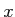
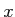

Although we cannot perform an infinite calculation, we can observe how the limit is approaching
One way to do this is to build a series as in the previous problem for
a particular  , and to use the sum function to cmpute the sum.
This could be repeated for several values of
, and to use the sum function to cmpute the sum.
This could be repeated for several values of  . An easier way to
see the progression is to rely instead on the cumsum function.
For a vector v, the call sum(v) returns a scalar that is
the sum of all entries. In constrast, the call cumsum(v)
returns a vector with length equal to v, where the kth entry of
the result is the sum of the first k entries of v (thus the last entry
of the result the sum of all entries).
. An easier way to
see the progression is to rely instead on the cumsum function.
For a vector v, the call sum(v) returns a scalar that is
the sum of all entries. In constrast, the call cumsum(v)
returns a vector with length equal to v, where the kth entry of
the result is the sum of the first k entries of v (thus the last entry
of the result the sum of all entries).
If we let v denote the vector from the previous problem for , examine the results of cumsum(v).
Although, we cannot precisely evaluate an infinite sum, we can
create a decent approximation to by evaluating the sum of the
first  terms of this series.
terms of this series.
Using cumsum as in the previous problem, compute a vector approxE that has approximations of based on the first terms of the infinite series, for ranging from 1 to 20. Then compute another vector named errors by subtracting exp(1) from all entries so that what remains is the difference between our approximation and MATLAB's computation of .
Create a script that approximates the value by summing the first  terms of the series and then test the results by evaluating the expression
yourApprox - log(2), which represents the difference between
your approximation and MATLAB's calculation of the value. How does
this difference vary with the choice of
terms of the series and then test the results by evaluating the expression
yourApprox - log(2), which represents the difference between
your approximation and MATLAB's calculation of the value. How does
this difference vary with the choice of  ?
?
There is a library function polyval(p,x) that computes
given such a vector  and scalar . However, we can perform the
evaluation ourself through use of vectorized operations. Give an
expression or a series of commands to compute given
and scalar . However, we can perform the
evaluation ourself through use of vectorized operations. Give an
expression or a series of commands to compute given  and .
and .
Let's test this empirically. Assuming that variable  represents
the desired number of trials, develop an expression that computes the
percentage of
represents
the desired number of trials, develop an expression that computes the
percentage of  random numbers that are less than or equal to
random numbers that are less than or equal to  .
Once you have your formula developed, test it by hand on values of
.
Once you have your formula developed, test it by hand on values of  such as , , , .
such as , , , .
Let's test this empirically. Assuming that variable  represents
the desired number of trials, develop an expression that computes the
percentage of
represents
the desired number of trials, develop an expression that computes the
percentage of  normally distributed random numbers that are greater
than or equal to .
Once you have your formula developed, test it by hand on values of
normally distributed random numbers that are greater
than or equal to .
Once you have your formula developed, test it by hand on values of  such as , , , .
such as , , , .